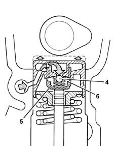

HYDRAULIC TAPPETS
- Path
- Descriptions > 10 ENGINE > 1036 TIMING SYSTEM > 1036E CAMSHAFTS (2) IN CYLINDER HEAD (1) > HYDRAULIC TAPPETS
- Kind
- system description
- Applies to
- engines: 3.0 V6, 3.2 V6; all production periods
- Interactive page
- https://sloeber94.github.io/elrnDB-lThss/en/#/613276
Applies to: engines: 3.0 V6, 3.2 V6; all production periods
The hydraulic tappets automatically take up valve clearance during engine service. This offers the advantage of reducing:
- maintenance operations.
- engine noise.
OPERATION IN OPEN STAGE
When camshaft cam acts on cup (1) and thus piston (2), oil trapped in chamber (6) due to closure of ball valve (4) trasmits the movement of piston (2) directly to sleeve (3) and hence the valve. At this stage, due to the high pressure acting on the oil, a part of the oil in chamber (6) leaks through the tiny gap between piston (2) and sleeve (3).
OPERATION IN CLOSED STAGE
During valve closure, as long as the tappet pressed by the action of spring (5) follows the cam outline, a vacuum builds up inside chamber (6) that brings about opening of ball valve (6) to allow oil to enter. The oil taken into chamber (6) replaces the oil that leaked out during valve opening.
